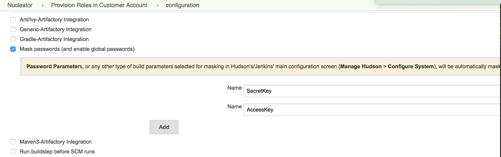
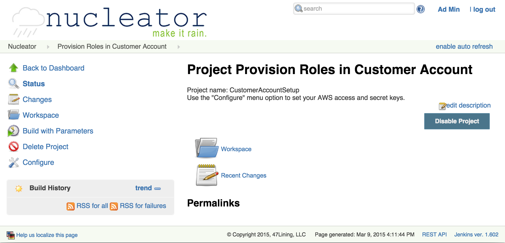
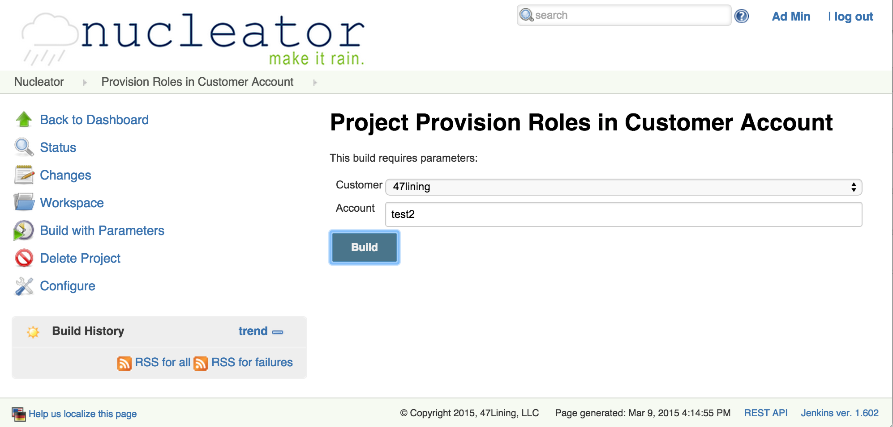

Provision Roles
If a new account is added, the roles need to be provisioned in that account.
AWS Roles are used for authentication of the various instances. When a new account is added, the Nucleator roles must created in that account. This Nucleator User Interface project does that for you. This action needs the access key and secret key for your account. There is a feature which enables these keys to be masked in the output. To set the values before running the command, click on the "Configure" link and scroll to the section where these are set: (you may have to scroll right to see the value input boxes)

Then, click on the link "Build with Parameters":

And enter the customer and account name:

For details, see page Prepare AWS Account - Provisioning Your Account with required Nucleator IAM Roles